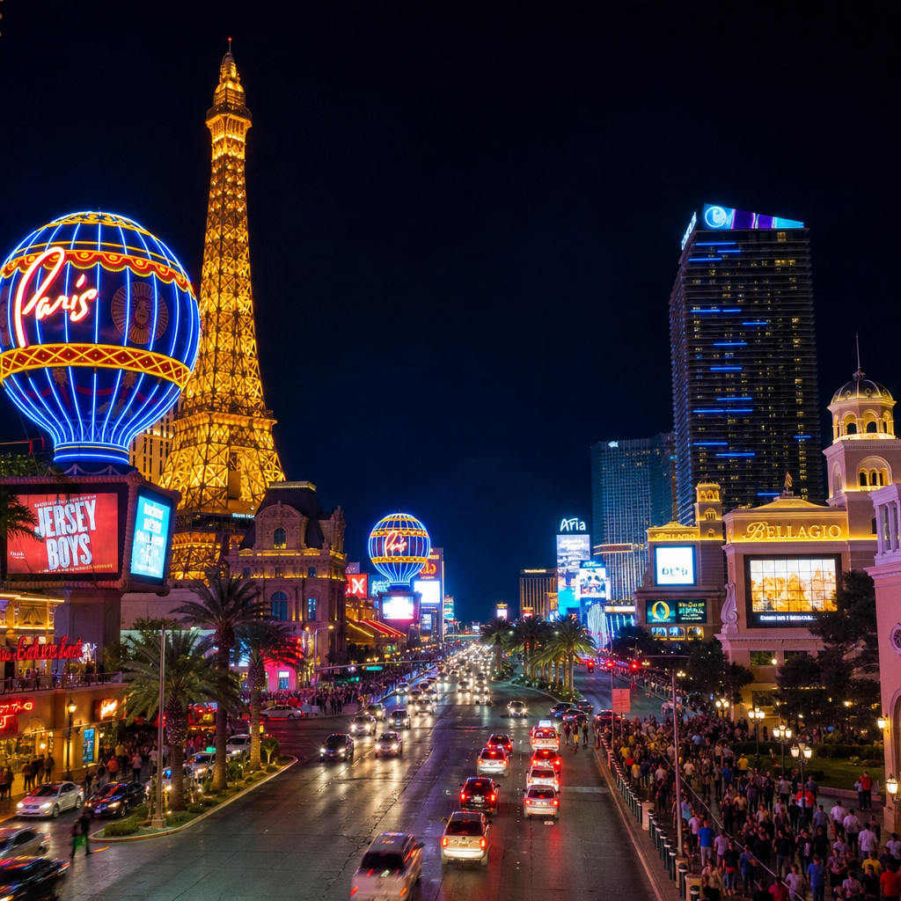
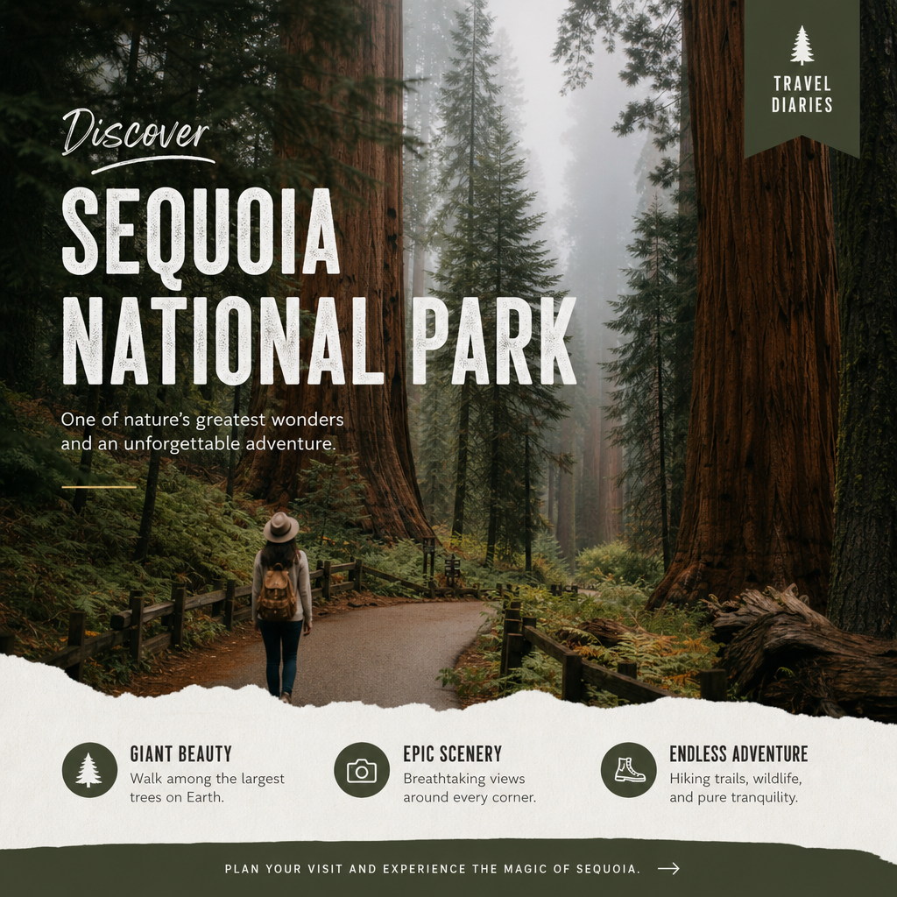
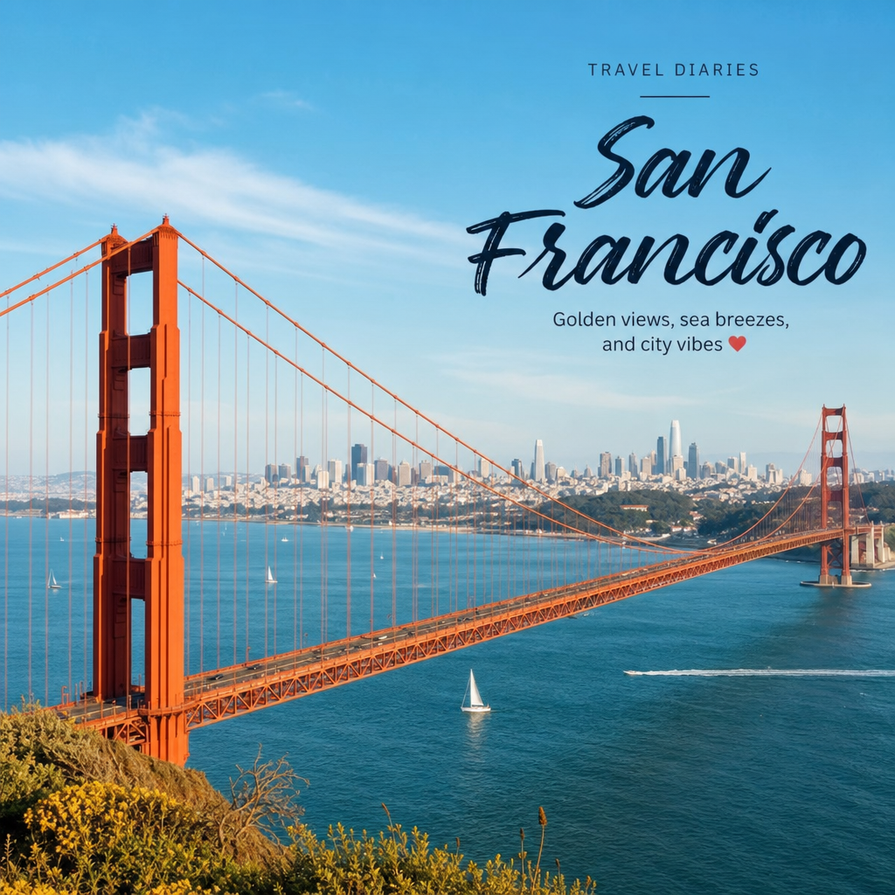
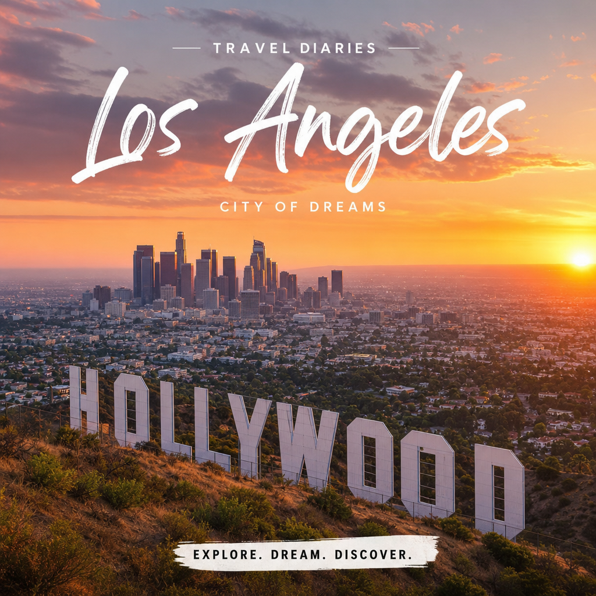
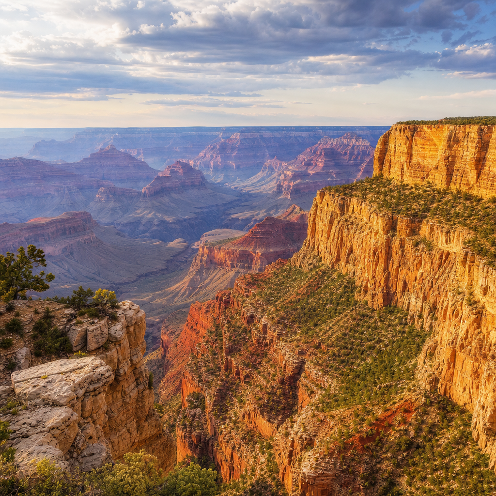
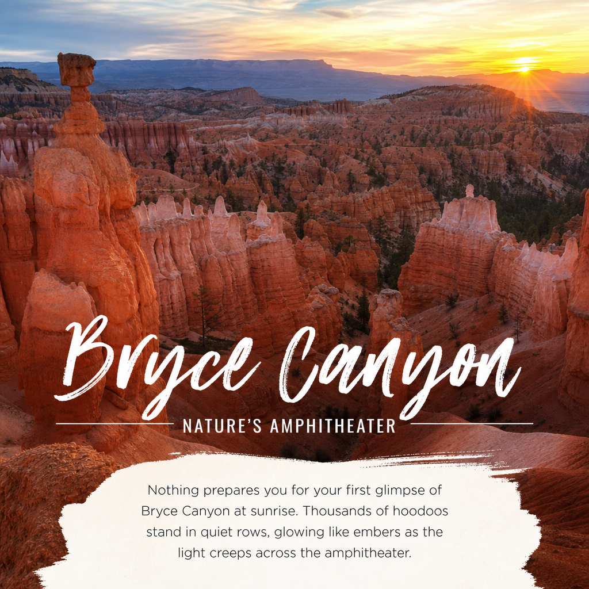

Reiseverlauf: USA Westküste 2022
28. Mai: Ankunft Las Vegas
- Ankunft am Flughafen Las Vegas.
- Transfer zum Hotel Bellagio.
- Aufenthalt im Casino-Bereich.

29. Mai: Death Valley National Park
- Fahrt zum Death Valley mit Stopps an Dante‘s View und Zabriskie Point.
- Besuch des Badwater Basin (86 m unter Meeresspiegel).
- Fahrt über den Artist Drive.
- Übernachtung in der Oasis Ranch at Death Valley.
30. Mai: Fahrt Richtung Sequoia
- Besuch der Dünengebiete.
- Zwischenstopp in Ridgecrest.
- Fahrt in das Berggebiet (bis auf 2000 m).
31. Mai: Sequoia National Park
- Besuch des General Sherman Trees.
- Wanderung am Moro Rock (ca. 400 Stufen).
- Besuch des Big Trees Trail.
- Fahrt Richtung Yosemite über Landstraßen.

1. Juni: Yosemite National Park
- Besuch der Lower Yosemite Falls.
- Aufenthalt an der Sentinel Bridge mit Blick auf den Half Dome.
- Wanderung am Mist Trail.
2. Juni: Weiterreise nach San Francisco
- Fahrt aus dem Yosemite Valley.
- Überquerung der Golden Gate Bridge.
- Übernachtung im Cavallo Point Hotel mit Blick auf die Brücke.

3. Juni: San Francisco
- Besuch von Alcatraz.
- Besuch von Pier 39 und den Painted Ladies.
- Fahrt mit Cable Car und Straßenbahn.
- Fährfahrt nach Sausalito.
4. Juni: Umgebung San Francisco
- Fahrradtour zu Aussichtspunkten bei den Headlands.
- Fahrt nach Stinson Beach.
- Rückweg mit Halt am Muir Beach.
5. Juni: Fahrt nach Morro Bay
- Fahrt über den Highway 1 entlang der Küste.
- Stopp am Julia Pfeiffer Burns State Park.
- Übernachtung in Morro Bay mit Ocean View.
6. Juni: Santa Barbara & Weiterreise nach LA
- Besuch der Mission Santa Barbara.
- Fahrt nach Los Angeles.
- Übernachtung im Hotel Pendry in West Hollywood.
7. Juni: Los Angeles
- Stadtrundfahrt: Downtown, Observatorium, Walk of Fame.
- Besuch des Farmer‘s Market.
- Besuch von Venice Beach.

8. Juni: Malibu & Santa Monica
- Fahrt am Mulholland Drive.
- Aufenthalt in Malibu am Strand.
- Besuch des Santa Monica Piers.
9. Juni: Fahrt nach Pioneertown
- Fahrt durch das Joshua Tree Gebiet.
- Besuch im Hidden Valley.
- Übernachtung im Motel Pioneertown.
10. Juni: Route 66 & Grand Canyon Region
- Fahrt durch das Yucca Valley.
- Stopp in Oatman (Esel auf der Straße).
- Fahrt über die Route 66 durch Kingman nach Seligman.
- Weiterreise nach Tuscayan (Grand Canyon).
11. Juni: Grand Canyon
- Helikopterflug über den Canyon.
- Besuch des Visitor‘s Centres.
- Fahrt zu Aussichtspunkten: Mather‘s Point, Yavapai Point, Desert View Point.

12. Juni: Monument Valley
- Fahrt zum Monument Valley.
- Tour durch das Tal mit Guide.
- Übernachtung in einer Cabin mit Blick auf das Valley.
13. Juni: Weiterreise nach Page
- Besuch des Forrest Gump Points.
- Besuch des Glen Canyon Stausees.
- Tour in einem Canyon in Page und Besuch des Horseshoe-Bends.
14. Juni: Bryce Canyon
- Wanderungen: Navajo Trail Wall Street, Queens Garden Trail.
- Fahrt zu diversen Aussichtspunkten: Inspiration Point, Bryce Point, Rainbow Point.

15. Juni: Valley of Fire & Rückreise Las Vegas
- Besuch Valley of Fire.
- Fahrt nach Las Vegas.
- Konzertbesuch (Sting).
16. Juni: Las Vegas
- Besuch im Outlet South.
- Besuch der Cirque du Soleil Show (Beatles LOVE).
17. - 18. Juni: Abreise
- Letzte Erledigungen und Brunch.
- Rückflug ab Las Vegas.
- Ankunft in Frankfurt am 18. Juni.